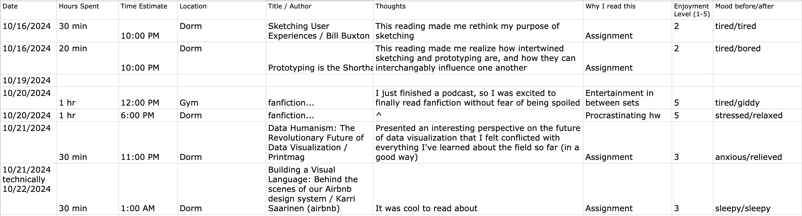
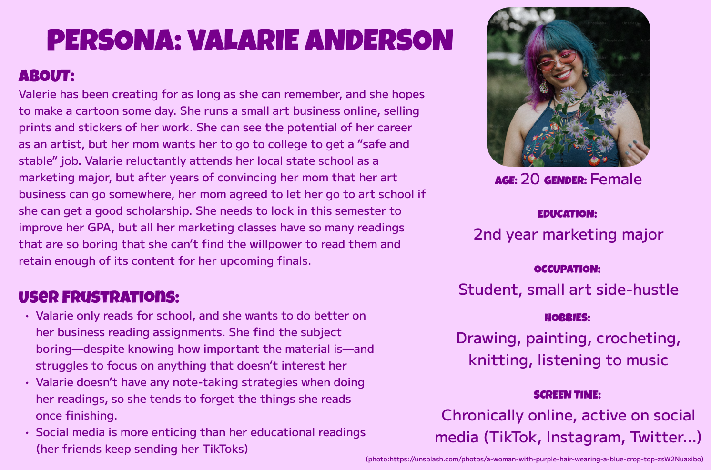
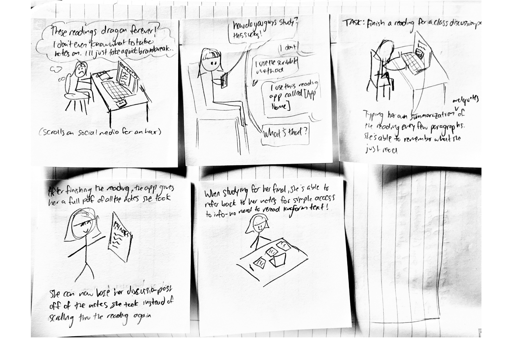
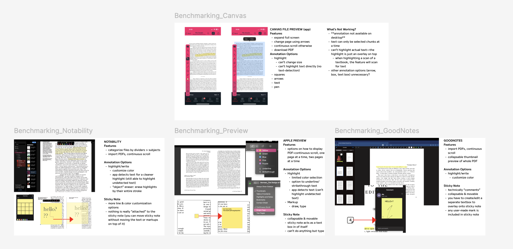
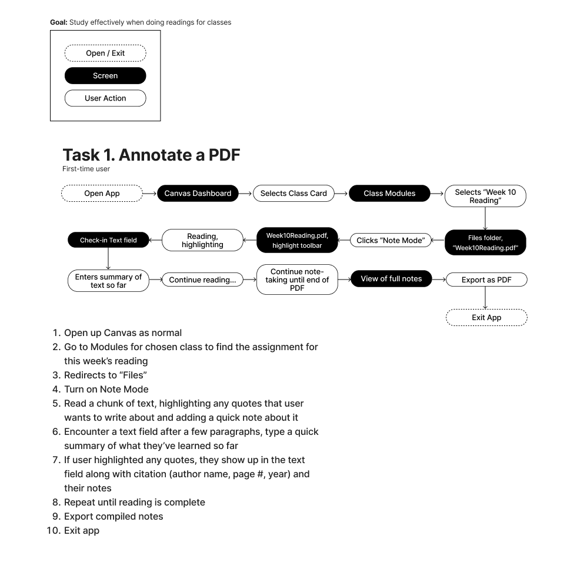
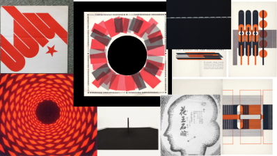

The Challenge: Redesign the reading experience for
college students
My Focus: Academic reading on Canvas—where students
engage with course readings and participate in discussion boards
The Solution: An integrated annotation and
note-taking feature that helps students stay focused and retain
information
Through user interviews and usability testing, I identified key pain
points in Canvas's reading experience and designed Note Mode—a feature
that complements the existing interface while addressing students'
needs for better focus, organization, and knowledge retention during
academic reading.
Understanding the Problem
Key Insights from User Research
I interviewed four students across different majors to understand their
reading habits, preferences, and pain points. Here's what I discovered:
Reagan - Computer Science & Media Arts
Pain Point: Losing track while scrolling through PDFs
on Canvas
"When it's one long [block of text] all at once, it's too much.
There's no motivation because they just drop it all on you, and you
don't know where you're going."
Alizeh - Computer Science
Pain Point: Lack of progress indicators and
overwhelming interfaces
Appreciated Apple Books for "different light modes and orientations"
and adjustable text size, but missed having a progress bar
Zoe - Biochemistry
Pain Point: Eye strain from screen brightness and
constant page navigation
Found iPad annotation helpful but disliked having to constantly move
the page with her finger to follow the text
Mason - Music Production & Audio Engineering
Pain Point: Distraction leading to re-reading
passages multiple times
"If I'm reading and I'm distracted and have to read passages over and
over again"
Common Themes
Across all interviews, I identified three core challenges students face
when reading on Canvas:
1. Loss of Focus: Dense text blocks without clear
progress indicators make it easy to lose place
2. Limited Engagement: Passive reading without
interaction tools leads to information loss
3. Poor Organization: No centralized way to revisit
highlights and notes from readings
Personal Reading Audit
I tracked my own reading habits for one week to validate these findings
and discover additional patterns in how students engage with academic
content.

Defining the Solution
How Might We help students using Canvas retain knowledge and stay
focused while reading across mobile and desktop?
Meet Valarie: Our Primary User
Based on research insights, I created a persona representing our
target user—a student who needs better tools to stay engaged with
academic readings.

Mapping the User Journey
I storyboarded Valarie's experience to visualize how Note Mode would
fit into her existing workflow and solve her pain points.

Learning from Competitors
I analyzed annotation features across popular note-taking apps and
Canvas's mobile interface to identify opportunities for improvement.
This helped me understand what works, what doesn't, and where Canvas
could differentiate itself.

Initial Explorations
Through rapid sketching, I explored various approaches to solving the
core problems— from interactive highlights to reflection prompts to
progress tracking.

Building & Refining
Feature Prioritization
I mapped out Canvas's existing information architecture and identified
where Note Mode would integrate seamlessly into the user's workflow.


User Flow
This workflow shows how students would move through the Note Mode
feature, from accessing a reading to reviewing their annotations
later.

Low-Fidelity Prototyping
I started with paper wireframes to quickly test different layouts and
interaction patterns before committing to digital designs. This
approach saved time and allowed for rapid iteration.

Moving to Digital
Once the core interactions were validated, I created digital
wireframes to refine the layout and prepare for usability testing.
Testing with Real Users
I conducted usability tests with students to validate my design
decisions and identify areas for improvement. The feedback was
overwhelmingly positive, with over 90% of participants finding Note
Mode intuitive and valuable.
Polishing the Experience
Establishing Visual Direction
To ensure Note Mode felt native to Canvas, I created a mood board
capturing the platform's existing aesthetic—academic, accessible, and
straightforward.

Design System Compliance
I documented Canvas's typography and color palette to ensure my
designs would integrate seamlessly with the existing interface. Why
reinvent the wheel when familiarity improves usability?

Final Interactive Prototype
Try it for yourself
here!
The final prototype demonstrates how Note Mode integrates into
Canvas's existing interface, allowing students to annotate readings,
write reflections, and review their notes—all within a familiar
environment.
Responsive Design: Mobile Experience
Since students often read on-the-go, I designed mobile screens that
maintain Note Mode's core functionality while adapting to smaller
screens. The challenge was preserving the annotation experience
without cluttering the limited space.
Reflections & Next Steps
This project taught me the importance of letting user research guide
design decisions rather than assumptions. Every feature in Note Mode
directly addresses a pain point identified during interviews—from
Reagan's struggle with losing her place to Mason's need to reduce
re-reading.
If I were to continue developing Note Mode, I'd focus on the user's
access to their notes throughout the process of notetaking. I've
recieved suggestions to create a sideways accordion, allowing users to
control when they see and edit the notes and when they're focused on the
reading.